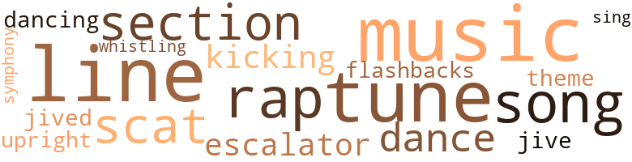
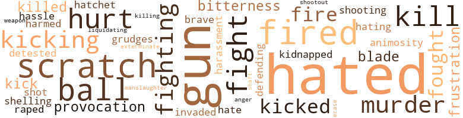

Welfare on Skid Row, by Garrett, Beatrice (1974)
52 music-related terms matched in this text.
Most frequent terms in this topic: music (8); line (7); tune (7); rap (4); song (4)
dance.n.01
Definition: an artistic form of nonverbal communication
| word | sentence |
|---|---|
| dance | He did n't feel guilty about stealing money , because after all , John had gotten rich robbing the poor drunks with a lot of stale cheap food that he hustled from the freight yard for a song and a dance . |
| dance | You seem to think it 's a song and a dance down here . |
dance.v.02
Definition: move in a pattern; usually to musical accompaniment; do or perform a dance
| word | sentence |
|---|---|
| dancing | For several weeks he had promised his " rap " buddy , Big Cheese , that he would run out to his place and pick up on the Go-Go Girls , who were now dancing topless and bottomless , because they would n't be around long , as soon as " the man " got wind of the happenings . |
escalator_clause.n.01
Definition: a clause in a contract that provides for an increase or a decrease in wages or prices or benefits etc. depending on certain conditions (as a change in the cost of living index)
| word | sentence |
|---|---|
| escalators | It was upstairs , so he jumped on the escalators , and almost lost his balance as he reached for the handrail . |
| escalator | By the time he had finished the conversation , Rip was half way out the door and making it down the escalator , hitting every other step . |
flashback.n.01
Definition: a transition (in literary or theatrical works or films) to an earlier event or scene that interrupts the normal chronological development of the story
| word | sentence |
|---|---|
| flashbacks | Except for the fact that his pupils were dilated and the colors seemed to be intensified , with occasional flashbacks which were disturbing at first , Deacon was in pretty high gear . |
jive.v.01
Definition: dance to jive music; dance the jive
| word | sentence |
|---|---|
| jived | He picked it up , put the receiver to his ear , hoping it would n't be one of those chicks that he usually shucked and jived with down on the street . |
kick.v.04
Definition: kick a leg up
| word | sentence |
|---|---|
| kicking | Whipping heads and kicking asses was a way of life , and it was no longer " Would you like to sell your chit ? " but " You 'd better sell the motherfucker or else . " |
| kicking | Deacon had long since made his reputation for kicking butts , and most of the guys knew this and just worked around him , hoping he would n't get jumpy . |
music.n.01
Definition: an artistic form of auditory communication incorporating instrumental or vocal tones in a structured and continuous manner
| word | sentence |
|---|---|
| music | Pietro clapped his hands twice and the draperies silently drifted together , as the stereo came on with soft enchanting music . |
| music | The music in the background was soft , and maybe a little too sentimental , but he let it play . |
| music | Both the music and the lights were soft and the atmosphere had a tranquil cooling demureness with an occasional aroma of jasmine captivatingly hypnotic in effect . |
| music | He was n't in any shape to eat or drink , so he just sat around and listened to the music in between nods . |
| music | He smiled and put his hand around her waist , not because he was interested , but because it seemed to be the natural thing to do because the lights were soft and the music was romantic . |
| music | He stuck the key in the door ; the lights were on , and he could hear soft music in the background . |
| music | It was like music to the ear when the judge announced in court that he was about to go on vacation , and would be gone at least three weeks . |
| music | Maybe a little music and another drink would settle him a bit . |
rap.n.05
Definition: genre of African-American music of the 1980s and 1990s in which rhyming lyrics are chanted to a musical accompaniment; several forms of rap have emerged
| word | sentence |
|---|---|
| rap | Tin 's way , Bo-Dilly could buy the chits on the outside and he would get a chance rap with the guys on the inside , and convince them to sell their vouchers . |
| rap | Deacon still held down his post as " rap man " and he spent most of his time keeping Big Daddy supplied with the chits and collecting the money . |
| rap | By the time someone tried to fish it out he 'd rap his blade across their ass and try to damn near kill 'em . |
| rap | He always spent a half hour with them , listening to their complaints and letting them rap off about this and that , which was more or less an outlet rather than a learning session . |
scat.n.01
Definition: singing jazz; the singer substitutes nonsense syllables for the words of the song and tries to sound like a musical instrument
| word | sentence |
|---|---|
| scat | Deacon sat on the edge of his scat . |
| scat | He leaped out of the car , grabbed her luggage , and put it by the door and helped her out of the back scat in less than a second . |
| scat | Deacon started squirming in his scat after the last sentence and the district attorney continued , " These chits are then sold to certain vendors in the area for approximately ten percent profit over what they paid the recipients for them , and the vendors in turn collect the full face value from the County . |
section.n.01
Definition: a self-contained part of a larger composition (written or musical)
| word | sentence |
|---|---|
| section | He always enjoyed being asked what part of Italy he was from and each time would give a different section , just to confuse the issue . |
| section | He was happy about the fact that Deacon and his men had already been through , and were probably in another section or out on bail by this time . |
| section | Working with the Tribe gave Little Man all of the potential for operating his own territory , and after three years , Limpo pre - sented him with the entire section of the downtown area . |
sing.v.02
Definition: produce tones with the voice
| word | sentence |
|---|---|
| sing | By the time he was six or seven , his mother discovered she could sing , and she joined the church choir . |
song.n.01
Definition: a short musical composition with words
| word | sentence |
|---|---|
| song | We 've had it rough , sure , and so have a lot of other races , and our theme song has always been , " let George do it . " |
| song | For a brief moment he remembered his favorite song by Billie Holiday , " God Bless the Child . " |
| song | He did n't feel guilty about stealing money , because after all , John had gotten rich robbing the poor drunks with a lot of stale cheap food that he hustled from the freight yard for a song and a dance . |
| song | You seem to think it 's a song and a dance down here . |
swing.n.05
Definition: a style of jazz played by big bands popular in the 1930s; flowing rhythms but less complex than later styles of jazz
| word | sentence |
|---|---|
| jive | Feeling embarrassed for a moment , he tried to collect his thoughts and get his line of jive together . |
symphony.n.01
Definition: a long and complex sonata for symphony orchestra
| word | sentence |
|---|---|
| symphony | You get a chance to rub elbows with attorneys , judges , doctors , symphony conductors , scientists , and geniuses in all walks of life , all having one thing in common , a problem that they are unable to cope with . |
theme.n.03
Definition: (music) melodic subject of a musical composition
| word | sentence |
|---|---|
| theme | We 've had it rough , sure , and so have a lot of other races , and our theme song has always been , " let George do it . " |
tune.n.01
Definition: a succession of notes forming a distinctive sequence
| word | sentence |
|---|---|
| line | You had to walk a mile down the hall to use the jolhn and most of the time you had to wait in line . |
| tune | He only went to the sixth grade , but his pushing and shoving , and mother-wit paid off to the tune of over a hundred thousand dollars a year in legal channels , and an undisclosed amount of money from other ventures . |
| tune | Two weeks , and God only knows how many drinks later , he was operating to the tune of a thousand dollars worth of chits a day . |
| lines | After parking almost two and a half blocks away , he made the rest of the way on foot and the long lines told him that business would be damn good in the event that he could get the approval from the supervisor . |
| line | Feeling embarrassed for a moment , he tried to collect his thoughts and get his line of jive together . |
| tune | He was attracted most by her small almond-shaped eyes and high cheekbones , and he could feel the bottom of his stomach beating like a pulsebeat to a tune he had never felt before . |
| tune | All of his anxieties were less frequent , and his mind and body were in tune with all of the Godlike powers that were buried inside of him maybe for over a thousand years . |
| tune | It was time for elections , and the district attorney was going to make damn sure that the voting public would keep him in office because he was cracking the whip to the tune of thousands and thousands of tax dollars that had unscrupulously fallen into the hands of petty crooks and hustlers . |
| line | He was a criminal lawyer , knew his way around and had come from a long line of attorneys who had practiced in the County for the last fifty years . |
| tune | Big Daddy was mad as hell because the County was constantly rejecting the vouchers that he had already paid off and he was losing money to the tune of close to five hundred dollars a day . |
| tune | Some of the chumps , who had n't come in to see the movies in the first place , were sprawled out over two or three seats , like giant eagles in flight , blissfully snoring to the tune of " Poverty , here I come . " |
| line | Deacon grabbed the cup of coffee and got in line , standing behind a crazy motherfucker who looked like a mule eating ice cubes sprinkled with alum . |
| line | After he got out of line , he could see that there were at least fifteen or twenty men behind him . |
| line | When he saw Frenchie in line , he knew that things were rough . |
| line | Here 's three ladies standing in line at the unattached men 's center - my God , what 's next ? |
upright.n.02
Definition: a piano with a vertical sounding board
| word | sentence |
|---|---|
| upright | He was shocked when he got up the next morning and saw the two stonelike figures sitting upright on the sofa , afraid to move anything except their eyeballs , while the dogs lay in front of them , staring them coldly in the eyes , daring them to move . |
whistle.v.01
Definition: make whistling sounds
| word | sentence |
|---|---|
| whistling | He closed his eyes , as he tried to cut out the sound of the giant windstorm whistling through the trees . |
119 violence-related terms matched in this text.
Most frequent terms in this topic: hated (21); gun (15); scratch (6); fired (6); ball (5)
abrasion.n.01
Definition: an abraded area where the skin is torn or worn off
| word | sentence |
|---|---|
| scratch | " I 've got some running to do , and I need the scratch now . |
| scratch | His money is steadily making money , even while he 's sleeping , but the sweetest part of all is , he never runs out of scratch . " |
| scratch | You could at least pay me for my stuff in cash , because I know that you 've been working with Deacon selling the County vouchers , so I know you got the scratch . |
| scratch | All of the boys were sitting around with no visible means of support except from him and he was sorry , but they would all have to use public defenders , because he just did n't have the scratch . |
| scratch | Sure , things got a little rough , here and there , but all he needed was one fool , with a little scratch , and he could " get over . " |
| scratch | He looked out the window hoping he could see one of his running buddies and get some of the scratch they owed him . |
aggravation.n.02
Definition: unfriendly behavior that causes anger or resentment
| word | sentence |
|---|---|
| provocation | He used the butt of his gun at the slightest provocation and , when things got rough , he did n't mind unlocking the safety and shooting a sucker in the foot . |
| provocation | He was " hipped " to all of the small-scale con games and he kept his gun locked , cocked , and ready to intervene at the slightest provocation . |
anger.n.01
Definition: a strong emotion; a feeling that is oriented toward some real or supposed grievance
| word | sentence |
|---|---|
| anger | He broke out in a cold sweat , not from dope , but from anger . |
animosity.n.01
Definition: a feeling of ill will arousing active hostility
| word | sentence |
|---|---|
| animosity | Digging his fingernails into Deacon 's arm only made him reek with animosity as Deacon gripped him harder and pressed the barrel of his gun in the pit of his stomach . |
blast.v.03
Definition: use explosives on
| word | sentence |
|---|---|
| shelling | He was happy about the setup at first and did n't mind shelling out the hundred and fifty dollars a month rent or buying all of the other things that she thought she had to have . |
erase.v.01
Definition: remove from memory or existence
| word | sentence |
|---|---|
| erase | Either way , he would be humiliated ; nothing could erase that feeling . |
exterminate.v.01
Definition: kill en masse; kill on a large scale; kill many
| word | sentence |
|---|---|
| exterminate | " We had two worms in a barrel of apples , and all we did was exterminate the worms so that they would n't ruin the apples . " |
fight.v.02
Definition: fight against or resist strongly
| word | sentence |
|---|---|
| fought | Wiping his good eye with the back of his hand and adjusting his patch over the other eye , he faced Pietro and said , " You do n't know how I fought this thing out , but I want to come to the point . |
| fight | He had to fight the women off with a flyswatter , and he was known to be a big spender anywhere he went . |
| fight | Reaching out for her , he pounced down in the bed and smothered her cries with his lips , as she tried to fight him off with her long fingernails . |
| fighting | She was fighting with every breath in her body , but he had made up his mind that she was going to belong to him tonight and he was n't about to give up now . |
| fight | She laid motionless too tired to fight any longer as a strange look of fear came into her eyes . |
| fighting | He was glad that she stopped fighting him ; he wanted her to enjoy his body and the warm kisses that he gave pouring out all the love that had been pinned up for so long for her . |
| fighting | This means you give the bastards your last two dollars and you 're up all night fighting bugs and roaches . " |
| Defending | Defending crooks was a way of life for him and he knew how to throw his weight around without stepping on any toes . |
| fought | They looked like they had been through three wars , and all of the wars were fought on their faces . |
| fight | She would n't fight it " cold turkey , " because it was too hard to do , and here he was , left with a problem that had no solution . |
frustration.n.03
Definition: a feeling of annoyance at being hindered or criticized
| word | sentence |
|---|---|
| frustration | All he could think of was his frustration of trying to get his business together . |
| frustrations | Disregarding her wishes , he made up his mind that he was going to grab the bull by the horns and release all of his frustrations by taking himself a piece . |
grudge.n.01
Definition: a resentment strong enough to justify retaliation
| word | sentence |
|---|---|
| grudges | Carl shrugged his shoulders as he wiped off the bar and said , " One thing you can depend on , Rico do n't hold no grudges , especially where money 's concerned . |
gun.n.01
Definition: a weapon that discharges a missile at high velocity (especially from a metal tube or barrel)
| word | sentence |
|---|---|
| gun | Feeling relieved , he laid the gun on the coffee table , placed his attaché case at the foot of the sofa , and got out of his coat . |
| gun | Digging his fingernails into Deacon 's arm only made him reek with animosity as Deacon gripped him harder and pressed the barrel of his gun in the pit of his stomach . |
| gun | He used the butt of his gun at the slightest provocation and , when things got rough , he did n't mind unlocking the safety and shooting a sucker in the foot . |
| gun | Angelo reached down in the confusion and pulled out Deacon 's gun from his holster . |
| gun | He started his business day earlier and stayed until the last gun fired in order to get his hands on as many chits as possible . |
| gun | Taking off his jacket , he put on his holster and slipped his gun into place . |
| gun | He crept along the street , walking against the sides of the buildings with two explosive things in his pocket , the gun and the money . |
| gun | He kept on his hat and his overcoat , and toyed occasionally with his gun in his right hand pocket . |
| guns | To make it look authentic , I haggled a little and told him I wanted twenty-six but he stuck to his guns , put the chit in his pocket and handed me a twenty-dollar bill and four ones . " |
| gun | Even before Rip took it out , Deacon knew it was a machine gun . |
| gun | He went and loaded the gun with a cartridge clip and thrust it into Deacon 's hands . |
| gun | " Look , man , " he said in a low firm tone , " I 'm already in trouble with the heat , and all I need now , is a machine gun beef , and I 've had it . " |
| gun | Rip pulled out the cartridge and slipped the gun back into the bag . |
| gun | He was " hipped " to all of the small-scale con games and he kept his gun locked , cocked , and ready to intervene at the slightest provocation . |
| gun | For a fleeting moment he had the urge to reach for his gun under the counter and let him have a bullet between the ears . |
| gun | He wasted no time picking up his gun , and pointing it at Tally , said , " What I think about a dope addict ai n't nothing . |
gunfight.n.01
Definition: a fight involving shooting small arms with the intent to kill or frighten
| word | sentence |
|---|---|
| shootout | Limpo was an amputee , because he lost both legs and his only son during a violent shootout in a remote meeting place in the Canyon . |
harassment.n.01
Definition: a feeling of intense annoyance caused by being tormented
| word | sentence |
|---|---|
| harassment | This investigation , he thought , may be just a form of harassment , because they had a sneaking suspicion that everything was clean as the board of health anyway . |
harm.v.01
Definition: cause or do harm to
| word | sentence |
|---|---|
| harmed | He spoke , " Did you feel that if Deacon knew that you were an investigator , he would have harmed you in any way ? " |
hassle.n.02
Definition: disorderly fighting
| word | sentence |
|---|---|
| hassle | Big Daddy was n't in any mood to hassle with the shit , so he took the other grand which was in the safe , threw it to Big Foot , and closed the safe . |
hate.n.01
Definition: the emotion of intense dislike; a feeling of dislike so strong that it demands action
| word | sentence |
|---|---|
| hate | The DA 's lips trembled with hate . |
hate.v.01
Definition: dislike intensely; feel antipathy or aversion towards
| word | sentence |
|---|---|
| hated | He hated pushers and he hated dope , but most of all , he hated his mother - but only for a moment . |
| hated | He hated pushers and he hated dope , but most of all , he hated his mother - but only for a moment . |
| hated | He hated pushers and he hated dope , but most of all , he hated his mother - but only for a moment . |
| hated | She was inconceivably sick most of the day and as much as he hated it , he had made up his mind that he was going to make her break the habit no matter what price he had to pay . |
| hated | He had been a loser all his life , mostly by choice , because he was lazy and hated any form of work . |
| hated | If Deacon had been a crying man , he would have been bawling by this time , but instead , he almost hated the sight of the food , because he knew he could n't pay his way , and that hurt him . |
| hated | He hated the sunlight , but more than that , he detested the " peeping Toms " who spent hours gazing into binoculars , checking out other people 's happenings . |
| detested | He hated the sunlight , but more than that , he detested the " peeping Toms " who spent hours gazing into binoculars , checking out other people 's happenings . |
| hated | Hornet hated the word " Boss , " especially coming from Dan , mostly because he said it in a sarcastic tone and really did n't mean it in the first place . |
| hated | Hornet nodded as a form of acknowledgment , but he knew that most Blacks hated working for each other for some reason , but he never figured out why . |
| hating | He watched Zelda , almost hating the way he felt about her . |
| hated | Not only that , he hated it Deacon was getting reckless with his wild tactics of getting his hands on the chits . |
| hated | The guys still hated Bobo as much as they did the first day he arrived on the scene , but Deacon ignored this , and even got him a room in the same hotel , on the first floor . |
| hated | One thing he hated was a damn informer , and a motherfucking snitch . |
| hated | In fact , they hated snitches too . |
| hated | He almost hated to see the headlines in the newspaper tomorrow . |
| hated | He hated cops in any form , and he did n't want any contaot with them under any circumstances . |
| hated | He hated the sight he saw in the mirror . |
| hated | The Gimp did n't put up any resistance , because he hated Deacon before , and he hated him now . |
| hated | The Gimp did n't put up any resistance , because he hated Deacon before , and he hated him now . |
| hated | He loved Skid Row and hated it just as hard . |
| hated | Cold as he was , and as much as he hated it , he could stand a swig himself . |
| hated | One of the things that he hated most was a flatfooted crumb hustling game-playing son-of-a-bitch looking for a handout . |
invade.v.01
Definition: march aggressively into another's territory by military force for the purposes of conquest and occupation
| word | sentence |
|---|---|
| invaded | The rats had invaded the basement , literally walking off with the flour and cornmeal and had started on the first floor of the store gnawing and nibbling on anything that was n't nailed down . |
kick.v.04
Definition: kick a leg up
| word | sentence |
|---|---|
| kicking | Whipping heads and kicking asses was a way of life , and it was no longer " Would you like to sell your chit ? " but " You 'd better sell the motherfucker or else . " |
| kicking | Deacon had long since made his reputation for kicking butts , and most of the guys knew this and just worked around him , hoping he would n't get jumpy . |
kick_back.v.02
Definition: spring back, as from a forceful thrust
| word | sentence |
|---|---|
| kicked | He hit the ground like a sack of damp potatoes and Deacon swiftly kicked him in the groin with the tip of his shoe . |
| kicking | His Stacy Adams shoes were kicking him in the ass as he ran faster and faster , following the crowd . |
| kick | Do n't tell me you ca n't kick the habit . |
| kicks | Sal was getting his kicks by laughing at the guy , who was mad as hell by this time . |
| kicked | Just to keep everybody honest , he kicked asses , made heads roll , and kept his shoes shined at the same time . |
kidnap.v.01
Definition: take away to an undisclosed location against their will and usually in order to extract a ransom
| word | sentence |
|---|---|
| kidnapped | " Well , " he said , " do you think your friend would mind if I kidnapped you for the rest of the night ? |
kill.v.10
Definition: cause the death of, without intention
| word | sentence |
|---|---|
| killed | His brother and sister-in-law were killed in an automobile accident and he and his wife Beth wasted no time getting custody of their four small boys . |
| kill | The wait would be a long one and he had to figure out what he could do in the meantime to kill the time . |
| kill | To kill some time he decided to walk around for awhile , and see who he could run into . |
| killed | In later years , he gave it up , especially since one of his crime buddies was killed when a bullet caught up with him . |
| kill | He had some time to kill because the County Office did n't open until seven-thirty . |
killing.n.01
Definition: an event that causes someone to die
| word | sentence |
|---|---|
| killing | He made a few bucks here and there , but his money was n't long enough for him to make any sizable killing . |
killing.n.02
Definition: the act of terminating a life
| word | sentence |
|---|---|
| kill | By the time someone tried to fish it out he 'd rap his blade across their ass and try to damn near kill 'em . |
manslaughter.n.01
Definition: homicide without malice aforethought
| word | sentence |
|---|---|
| manslaughter | His two " beefs , " one for attempted murder , which was a short trip , and the other for manslaughter , which should have been a long trip , did n't phase him any because he had heavy money and knew how to pay off the right people . |
murder.n.01
Definition: unlawful premeditated killing of a human being by a human being
| word | sentence |
|---|---|
| murder | From the beginning , the money had a bewitching spell over him , one that he could n't quite control , one that had obsessed him , almost to the point of murder . |
| murder | Deacon had gotten vicious and contemptible and Big Daddy had gotten the word that he paid out some big money just to get a lead on Pietro 's murder . |
| murder | His two " beefs , " one for attempted murder , which was a short trip , and the other for manslaughter , which should have been a long trip , did n't phase him any because he had heavy money and knew how to pay off the right people . |
musket_ball.n.01
Definition: a solid projectile that is shot by a musket
| word | sentence |
|---|---|
| ball | To start the ball rolling , Deacon and the other goon walked slowly over to Big Red . |
| ball | A tight smile twisted Angelo 's lips as lie bit his lips and said , " I think with a little training , we can get this Nigger on the ball . |
| ball | With this , he put the ball dead in the pocket and the game was over . |
| ball | The DA was ready to get the ball rolling . |
| ball | The district attorney was about the most jubilant in the crowd , as he read his notes and waited for the judge to start the ball rolling . |
neutralize.v.04
Definition: get rid of (someone who may be a threat) by killing
| word | sentence |
|---|---|
| liquidating | Big Daddy was busy liquidating his businesses like they were hot potatoes and pulling money out of his bank accounts so fast the bank presidents were holding their heads in sheer disgust . |
open_fire.v.01
Definition: start firing a weapon
| word | sentence |
|---|---|
| fired | These two things he insisted upon , and had fired cooks left and right for disobeying these orders . |
| fire | Bo-Dilly was now the head " huncho , " with the power to hire and fire at will . |
| fired | He started his business day earlier and stayed until the last gun fired in order to get his hands on as many chits as possible . |
| fired | Dan 's wife had just had a new baby , and he knew if he did n't report for work this particu-lar day , that he would get fired and probably have to go over and get a County voucher for himself and his family . |
| fire | Deacon beckoned him out in the hall , put him in charge of the men , and threatened to fire him if they did n't show up for work Monday morning . |
| fired | It was gon na be rough as hell for him today , because he had fired Cecil last week when he caught him stealing a case of hot links from the walk-in refrigerator . |
| fired | He hired and fired pushers at the drop of the hat and dared them to inform " the man . " |
| fired | He worked for Little Man for about three months , just long enough to get the hang of things and then he got fired because he could n't report to work on time . |
pain.v.02
Definition: cause emotional anguish or make miserable
| word | sentence |
|---|---|
| hurt | If Deacon had been a crying man , he would have been bawling by this time , but instead , he almost hated the sight of the food , because he knew he could n't pay his way , and that hurt him . |
| hurt | It hurt me a little at first , but then I told myself that I was gon na find out myself and I 'm asking you , Mother , is this true ? " |
| hurt | ' This little bit wo n't hurt you , ' he said . |
| hurt | He was right , that little bit did n't hurt me , but that little bit eventually became a big bit , because I started shooting up with him every day . |
rape.v.01
Definition: force (someone) to have sex against their will
| word | sentence |
|---|---|
| raped | Meanwhile , he had decided to lay back like a bitch being raped and enjoy it . |
resentment.n.01
Definition: a feeling of deep and bitter anger and ill-will
| word | sentence |
|---|---|
| bitterness | Deacon felt a wave of bitterness swell over him like a dark cloud . |
| bitterness | His first experience with bitterness came when his dad walked out on his mother before he was six weeks old . |
shoot.v.02
Definition: kill by firing a missile
| word | sentence |
|---|---|
| shot | Big Foot was on the scene with his longarm habit the length of a bamboo cane , and must have shot up everything he could get his hands on before he got there . |
shooting.n.02
Definition: killing someone by gunfire
| word | sentence |
|---|---|
| shooting | Knowing Little Man , lie 's got the shit cut so thin you 'd do better going home and getting a box of baking soda , sprinkling some vinegar over it and shooting that . |
spear.n.01
Definition: a long pointed rod used as a tool or weapon
| word | sentence |
|---|---|
| shaft | Unfortunately , Trudy ran into a streak of bad luck , because he was found hanging by his heels in an abandoned elevator shaft and had stopped breathing . |
sword.n.01
Definition: a cutting or thrusting weapon that has a long metal blade and a hilt with a hand guard
| word | sentence |
|---|---|
| blade | I was sharper than a double-edge razor blade on both sides and had a woman on each arm . |
| blades | The hustlers , too , were doing their thing , relieving all of the able-bodied sleepers of their wallets and other valuables by slitting their hip pockets with sharp razor blades and daring their victims to complain . |
tomahawk.n.01
Definition: weapon consisting of a fighting ax; used by North American Indians
| word | sentence |
|---|---|
| hatchet | Quickly , he rushed his hands between her legs and grabbed for the patch of hair between her thighs , when a hatchet fell down around him across the back of his neck and shoulders causing him to spring up out of the bed as if he was ejected from a spaceship . |
weapon.n.01
Definition: any instrument or instrumentality used in fighting or hunting
| word | sentence |
|---|---|
| weapon | Grabbing his apron from the bag of laundry , he gave his last minute instructions to his two Alsatian dogs , picked up his change bag , and placing his weapon under his arm pit , headed downstairs to the store . |
weather.v.01
Definition: face and withstand with courage
| word | sentence |
|---|---|
| brave | Better to be alive and scared , than dead and brave . |
29 religion-related terms matched in this text.
Most frequent terms in this topic: God (10); church (3); Jews (2); synagogue (2); hell (2)
church.n.02
Definition: a place for public (especially Christian) worship
| word | sentence |
|---|---|
| church | You 're poor as a church mouse in a ghost town , you look like a crow in the face , and got arthritis , high blood pressure , and varicose veins . |
| church | By the time he was six or seven , his mother discovered she could sing , and she joined the church choir . |
church_service.n.01
Definition: a service conducted in a house of worship
| word | sentence |
|---|---|
| church | Most of the time he did n't have a place to stay and usually ended up eating a bowl of beans over at the Mission and listening to the church services that went in one ear and out the other . |
god.n.03
Definition: a man of such superior qualities that he seems like a deity to other people
| word | sentence |
|---|---|
| God | God only knows , he thought , if I could go into business , I could really " get over . " |
| God | Two weeks , and God only knows how many drinks later , he was operating to the tune of a thousand dollars worth of chits a day . |
| God | All of the nuts would be coming out of the woodwork , and God only knows what a sane person would have to encounter . |
| God | He figured that there were at least seventy-five people in this apartment alone and God only knows how many were in some of the other apartments . |
| God | You 're so busy , you ca n't even give God one hour a year of your time , and I say , when a man gets too busy for God , then lie 's in trouble . |
| God | Everytime you open your damn mouth , you 're talking about God . |
| God | No matter what happened , he never got too busy to stop and pray and to give God some of his time . |
| gods | Plead guilty , and may the gods have mercy on you . |
| God | Deacon did n't have anything to do , but he was n't about to get caught up there sleeping with God only knows what backed up in his room . |
| God | Silently all of his vices seemed to plague him , and he felt like he was being punished by some unknown distant God . |
| God | He was half-Negro , and God only knows what else , and had the usual hangups that most short men have , searching for that dynamic image so necessary for the ego . |
goddess.n.01
Definition: a female deity
| word | sentence |
|---|---|
| goddess | She wore a ruby red velvet gown which made her look like a black goddess moving gracefully around , keeping everybody 's drink refreshed and introducing the guests to each other . |
godhead.n.01
Definition: terms referring to the Judeo-Christian God
| word | sentence |
|---|---|
| almighty | He forgot about the county vouchers and all of the many things that he had to do to get his hands on that almighty floating dollar . |
heaven.n.02
Definition: the abode of God and the angels
| word | sentence |
|---|---|
| heaven | Her skin was soft as a baby 's and for a moment he knew that only heaven could be compared to this passion that went through his body like a bolt of electricity , setting every nerve in his body on fire . |
hell.n.01
Definition: any place of pain and turmoil
| word | sentence |
|---|---|
| hell | All of these things were a way of life on Skid Row , and what the hell was he doing down here ? |
| hell | What the hell has He ever done for you ? |
imitation.n.01
Definition: the doctrine that representations of nature or human behavior should be accurate imitations
| word | sentence |
|---|---|
| imitation | They both drove custom-built Cadillacs with mink seatcovers - no imitation crap , and a wet bar , telephone and television . |
jew.n.01
Definition: a person belonging to the worldwide group claiming descent from Jacob (or converted to it) and connected by cultural or religious ties
| word | sentence |
|---|---|
| Jew | One of his first lessons came from an old Jew he was working for . |
| Jews | He went on , " We Jews have just as much trouble as you do , but we just keep on pushing . |
| Jews | The others were either Chinese , Japanese , Greeks , or Jews , and they were all scared . |
prayer.n.01
Definition: the act of communicating with a deity (especially as a petition or in adoration or contrition or thanksgiving)
| word | sentence |
|---|---|
| prayer | " English is all right to know in prayer meeting , but it 's not worth a damn in bear meeting . " |
religion.n.01
Definition: a strong belief in a supernatural power or powers that control human destiny
| word | sentence |
|---|---|
| faith | I 'll leave you the money , you give me the grass as a sign of good faith , and we 're in business . " |
sermon.n.02
Definition: a moralistic rebuke
| word | sentence |
|---|---|
| sermon | The most some of them were gon na get was a long hard sermon , a bowl of beans , and a cup of black coffee . |
siren.n.01
Definition: a sea nymph (part woman and part bird) supposed to lure sailors to destruction on the rocks where the nymphs lived
| word | sentence |
|---|---|
| sirens | He was too preoccupied with the drunk to notice the black and white cars rushing down the street with the sirens up full blast . |
synagogue.n.01
Definition: (Judaism) the place of worship for a Jewish congregation
| word | sentence |
|---|---|
| synagogue | You do n't even take time out to go to the synagogue anymore , you 're too busy making money . |
| synagogue | He was a hard worker , and a good provider and never missed a sabbath at the synagogue . |